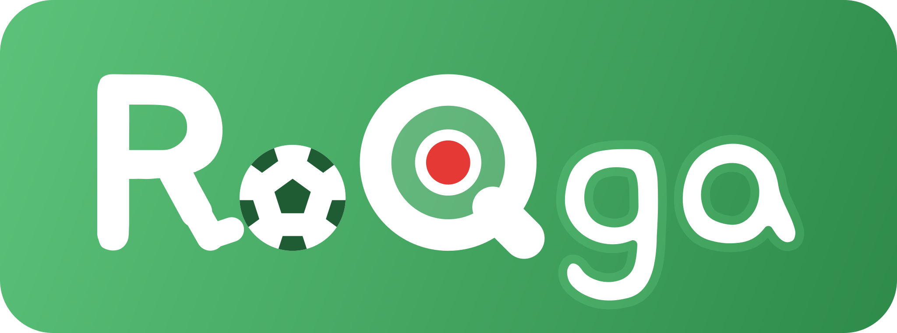

ろくが

撮った試合も、取った点も、とっておき
スマホを横にして、得点板つきで撮ります。
撮った動画に、あとから得点板を入れます。
0
0 - 0
0
チーム名・色は、さくせん盤と共通です。
プレビュー・得点板と演出
プレビュー
得点板（左上のチーム名とスコア）
得点のエフェクト（＋1 のとき、チームの色の帯と文字）
アイコン
動画はこの端末の中だけ。撮っているあいだは、ほかのアプリに切りかえないでください。
動画はこの端末の中だけ。書き出すあいだは、ほかのアプリに切りかえないでください。